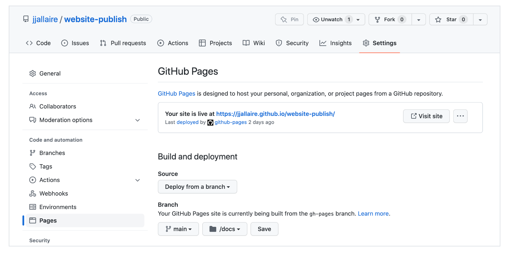

14wk-1: Quarto – 대시보드 만들기
1. 강의영상
2. 시각화수업 강의계획
- 다양한 욕망(=목표)이 결합된 수업
통계학과
- 키워드: 탐색적 자료분석
- 예시: 성별 타이타닉 생존자 수 시각화
- 목표: 데이터를 해석하고 분석하는 능력 (데이터의 해석에 관심이 있다, 상관관계/신뢰구간/잔차분석/등..)
- 특징: 그려놓고 해석을 함 (qqplot) + 통계적 처리를 해서 그림 (신뢰구간 등)
- 툴: R, Python
- 필수요소: 그림을 그릴 줄 알아야 함 (코딩능력) + 그림을 해석할 줄 알아야 함 (=데이터를 읽을 줄 알아야함)
- 수업범위: 파이썬/R 문법 리뷰 -> EDA -> 특이한 자료 시각화 (지리정보)
- 칭찬: 데이터를 보고 어떻게 이런 인사이트를 얻었냐? // 남들이 보지 못하는 (=다른학과에서 접근하기 어려운) 통계적 의미를 해석해야함!!
통계학과에서만 관심있을까??
컴퓨터공학과(산공)
- 키워드: 웹, 플랫폼 (크롤링+시각화 플랫폼, 시각화결과를 웹으로 배포)
- 예시: 코로나19 대시보드 (통계분석이 딱히 들어가진 않는 경우도 많음)
- 목표: 시각화 플랫폼 개발 / 시각화 앱을 개발 / 대시보드 설계(배포에 관심이 있음) – 내가 만든 시각화를 외부로 배포하여 핸드폰으로도 보고, 패드로도 보고..
- 특징: 인터렉티브 그래프, 움직이는 시각화 (애니메이션)
- 툴: 자바스크립트, 장고
- 필수요소: 코딩능력 + 배포 (이게 중요함)
- 수업범위: 여러가지 문법 리뷰 + 웹/플랫폼 + 대시보드 (학기말 프로젝트)
- 칭찬: 우와 막 움직여 신기해!! 어떻게 이런 앱을 만들었어?
시각디자인
- 키워드: 인포그래픽 (커피소비량, 팜플렛 느낌?)
- 예시: 커피소비량,
- 목표: 인상적이고 기억엔 남는 그림, 예쁜그림, 눈이 잘 인식하는 그림,
- 특징: 예뻐요.. (+ 터프티 교수님이 경기 일으킬듯한 그림)
- 툴: 일러스트레이터
- 필수요소: 일러와 같은 그래픽툴을 잘써야 함 + 미적 센스??
- 수업범위: 색이론(색의 배합, 보색등), 인지이론 –> 일러실습?
- 칭찬: 어떻게 이런 예쁜그림을 그렸어? 색상도 좋고, 눈에 잘들어와!
학원(패스트캠퍼스)
- 키워드: 공모전.. 실무..
- 예시: 데이터시각화 공모전
- 목표: 좋은 직장에 갈 수 있는 시각화 기술, 직장에서 인정받는 시각화 기술
- 특징: 배우기 쉬움, (해석X, 코딩X, 디자인툴X) + 엑셀상위호한 (빠르고 간단히)
- 툴: Power BI, 태블로
- 필수요소: PowerBI, 태블로를 능숙하게 쓸 수 있는 능력
- 수업범위: PowerBI, 태블로
- 안하는 이유: 유료 (회사에 따라 매우 불리할 수도 있음) / 대학에서 다룰 내용은 아닌듯
- 우리수업의 목표
- 그림을 읽는 능력, 데이터를 올바르게 해석하는 능력 // 통계학과 주력무기
- 파이썬이용 + 매우 높은 숙련도 // 안그러면 태블로계열로 공부한 친구들에게 너무 밀려요
- 기본적인 미적교양 (aes의 선택, 터프티와 나이젤홈즈, 훌륭한 시각화)
- 반응형플랏, 대시보드, 지리정보시각화 // 못하면 IT계열의 학과에게 밀려요..
3. 대시보드 만들기
A. 깃헙계정 가입하기
B. 깃헙레포지토리
- 깃헙 레포지토리 만들기
C. 깃헙레포지토리와 서버컴퓨터의 연결
- clone
git clone <레포지토리주소>파일들이 잘 있는지 확인
- 토큰생성 및 저장
아래의 주소로 접속하여
https://github.com/settings/tokens
토큰을 생성한다. 토큰이 생성되면 토큰을 복사한뒤 저장한다.
- push
레포지토리내의 README.md 파일을 수정해보고 아래를 입력
git add .
git commit -m .
git push 이후에 유저이름 입력하고 비밀번호는 복사해둔 토큰을 사용한다. 깃헙에 제대로 업로드 되었는지 확인한다.
D. 배포
ref: https://quarto.org/docs/dashboards/
ref: https://quarto.org/docs/publishing/github-pages.html
- 클론한 레포지토리에서 _quarto.yml파일을 만들고 아래를 입력
project:
type: website
output-dir: docs- 클론한 레포지토리에 Energy.qmd 파일을 생성하고 아래의 내용을 복사.
---
title: "에너지사용량 자료 분석"
author: "본인이름~"
format: dashboard
execute:
enabled: true
cache: false
freeze: false
error: true
---
```{python}
import numpy as np
import pandas as pd
import plotly.express as px
import plotly.io as pio
import json
import requests
pd.options.plotting.backend = "plotly"
pio.templates.default = "plotly_white"
global_dict = json.loads(requests.get('https://raw.githubusercontent.com/southkorea/southkorea-maps/master/kostat/2018/json/skorea-provinces-2018-geo.json').text)
local_dict = json.loads(requests.get('https://raw.githubusercontent.com/southkorea/southkorea-maps/master/kostat/2018/json/skorea-municipalities-2018-geo.json').text)
#--#
url = 'https://raw.githubusercontent.com/guebin/DV2022/main/posts/Energy/{}.csv'
prov = ['Seoul', 'Busan', 'Daegu', 'Incheon',
'Gwangju', 'Daejeon', 'Ulsan', 'Sejongsi',
'Gyeonggi-do', 'Gangwon-do', 'Chungcheongbuk-do',
'Chungcheongnam-do', 'Jeollabuk-do', 'Jeollanam-do',
'Gyeongsangbuk-do', 'Gyeongsangnam-do', 'Jeju-do']
df = pd.concat([pd.read_csv(url.format(p+y)).assign(년도=y, 시도=p) for p in prov for y in ['2018', '2019', '2020', '2021']]).reset_index(drop=True)\
.assign(년도 = lambda df: df.년도.astype(int))\
.set_index(['년도','시도','지역']).applymap(lambda x: int(str(x).replace(',','')))\
.reset_index()
df_global = pd.DataFrame([l['properties'] for l in global_dict['features']])
df_local = pd.DataFrame([l['properties'] for l in local_dict['features']])
df_json = df_local.set_index('name')\
.rename(
{name:name.split('시')[-1] for name in df_local['name'] if ('시' in name) and ('구' in name) and (len(name)>3)}
).reset_index()\
.drop(['base_year','name_eng'],axis=1)\
.rename({'name':'name_local','code':'code_local'},axis=1)\
.assign(code = lambda df: df['code_local'].str[:2])\
.merge(df_global.drop(['base_year','name_eng'],axis=1))
df_left = df.assign(
시도 = lambda df: df.시도.map({l['properties']['name_eng']:l['properties']['name'] for l in global_dict['features']})
).assign(on = lambda df: df.시도 + '-' + df.지역)
df_right = df_json.assign(on = lambda df: df.name + '-' + df.name_local)\
.drop(['name_local','name'],axis=1)
df2 = df_left.merge(
df_right.set_index('on')\
.rename({'인천광역시-남구':'인천광역시-미추홀구'})\
.reset_index()
).drop(['on'],axis=1)데이터탐색
#| title: 에너지사용량 자료
import itables
itables.show(df2,showIndex=False)시각화
Column
#| title: 2018년도 전기사용량 (전국)
fig = px.choropleth_mapbox(
geojson = local_dict,
featureidkey = 'properties.code',
data_frame = df2.query('년도 == 2018'),
locations = 'code_local',
color = '에너지사용량(TOE)/전기',
hover_data = ['시도','지역'],
#---#
mapbox_style="carto-positron",
range_color = [0,200000],
center={"lat": 36, "lon": 127.5},
zoom=6,
)
fig.show(config={'scrollZoom':False})Column
#| title: 2018~2019년도 전기사용량 (서울)
seoul_dict = local_dict.copy()
seoul_dict['features'] = [l for l in seoul_dict['features'] if l['properties']['code'][:2] == '11']
fig = px.choropleth_mapbox(
geojson = seoul_dict,
featureidkey = 'properties.code',
data_frame = df2,
locations = 'code_local',
color = '에너지사용량(TOE)/전기',
animation_frame= '년도',
hover_data = ['시도','지역'],
#---#
mapbox_style="carto-positron",
range_color = [0,400000],
center={"lat": 37.5642135, "lon": 127.0016985},
zoom=9,
)
fig.show(config={'scrollZoom':False})#| title: 2018~2019년도 에너지사용량 (전국)
fig = df2.drop(['code_local','code'],axis=1)\
.set_index(['년도','시도','지역','건물동수','연면적']).stack().reset_index()\
.rename({'level_5':'에너지종류', 0:'에너지사용량'},axis=1)\
.assign(에너지종류 = lambda df: df['에너지종류'].str.split('/').str[-1])\
.groupby(['년도','시도','에너지종류']).agg({'에너지사용량':'sum'})\
.stack().reset_index()\
.rename({0:'에너지사용량'},axis=1)\
.plot.area(
x='년도',y='에너지사용량',
color='시도',
facet_col='에너지종류'
)
fig.update_layout(
xaxis_domain=[0.0, 0.25],
xaxis2_domain=[0.35, 0.60],
xaxis3_domain=[0.70, 0.95]
)- 터미널에서 아래를 입력
quarto render Energy.qmd - local에 docs폴더 밑에 어떠한 파일들이 생성됨. 클릭해서 확인. 이 파일들을 github으로 push
git add .
git commit -m .
git push - 아래와 같이 Settings >Pages > Build and deployment > Brach 에서 경로를 main/docs로 변경하고 save

Appendix: 코드 훔치기
https://jjallaire.github.io/gapminder-dashboard/
위와 같은 꼴의 홈페이지에서 github username은 jjallaire 그리고 레포지토리 이름은 gapminder-dashboard 이다. 따라서 이 레포지토리의 주소는 아래와 같을 것이다.
https://github.com/jjallaire/gapminder-dashboard
접속을 해보면 대응하는 레포지토리가 있고 코드도 있다. 이런걸 잘 보고 베끼면 유용하다.